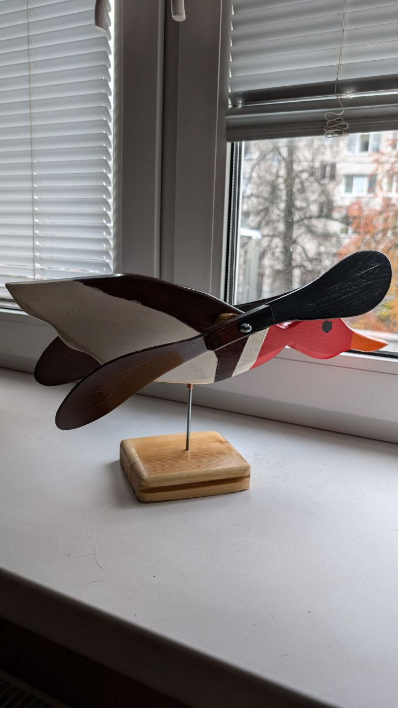

Поздравляем с приобретением деревянной утки-флюгера!
Теперь на вашем участке поселилась настоящая помощница по определению направления ветра — и просто отличный собеседник в ветреные дни.
Уточка предназначена для использования в летний сезон.
Зимой, как и все уважающие себя утки, она улетает в тёплое помещение — специально для этого предусмотрена подставка для зимовки.
Весной можно снова выпустить её на волю — пусть встречает ветра и радует глаз!
Если утка немного запылилась, просто протрите её сухой или слегка влажной тканью.
Не допускайте скопления влаги в местах вращения.
Утка покрыта тремя слоями яхтенного лака но ветер, дождь и солнце и его разрушают. По возможности ежегодно обновляйте покрытие лаком.
Буду признателен, если Вы оставите отзыв по QR-коду ниже — это поможет другим уткам найти свои новые дома 😊

🦆 Удачного полёта вашему флюгеру и пусть ветер всегда будет попутным!